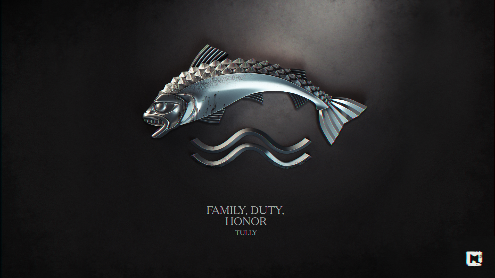

Талли
Талли (ориг. House Tully) — один из великих домов Вестероса. Правители Речных земель, правят из родового замка Риверран. На данный момент главой дома является Эдмур Талли.
Герб дома Талли — серебряная форель на красно-синем фоне, а их девиз — «Семья, долг, честь».
История
До событий сериала
Дом Талли завоевал высокое положение во время Завоевательной войны. Эдмин Талли, который в то время был главой этого благородного дома, поддержал Таргариенов и поднял восстание против короля, который в то время правил Железными островами и Речными землями, Харрена Чёрного. Лорды Речных земель во главе с Эдмином одержали верх, и, когда Эйгон I Таргариен завоевал континент и занял престол, он даровал Эдмину титул верховного лорда Речных земель, и с тех пор потомки Эдмина наследуют этот титул.
До недавнего времени главой дома Талли был Хостер Талли. Его дочери Кейтилин и Лиза, жёны лордов Эддарда Старка и Джона Аррена, во время Восстания Роберта сформировали крупный альянс их домов.
Исторически сложилось так, что Речные земли часто становились местом военных действий. Чтобы выжить, дом Талли постоянно заключал брачные альянсы с другими благородными домами.
Известные представители
- Лорд Хостер Талли, бывший глава дома, лорд Риверрана и верховный лорд Трезубца. Умер от старости в 300 году от З.Э.
- Леди Миниса Талли, урождённая Уэнт, жена лорда Хостера. Умерла во время родов вместе с ребёнком.
- Леди Кейтилин Талли, старшая дочь лорда Хостера и леди Минисы, жена Эддарда Старка. Убита во время Красной свадьбы Уолдером Риверсом в 300 году от З.Э.
- Леди Лиза Талли, младшая дочь лорда Хостера и леди Минисы, жена Джона Аррена. Была регентом Орлиного Гнезда, убита Петиром Бейлишем в 301 году от З.Э.
- Лорд Эдмур Талли, сын лорда Хостера и леди Минисы. Нынешний глава дома, лорд Риверрана и верховный лорд Трезубца.
- Леди Рослин Талли, урождённая Фрей, жена лорда Эдмура.
- Неназванный сын лорда Эдмура и леди Рослин.
- Сир Бринден Талли по прозвищу «Чёрная Рыба», брат Хостера, рыцарь. Убит во время падения Риверрана в 303 году от З.Э.
Предки
- Лорд Аксель Талли, первый лорд Риверрана, получил земли на стыке Красного Зубца и Камнегонки, где и построил Риверран.
- Лорд Эдмин Талли, глава дома и лорд Риверрана во время Завоевательной войны, первый верховный лорд Речных Земель из дома Талли.